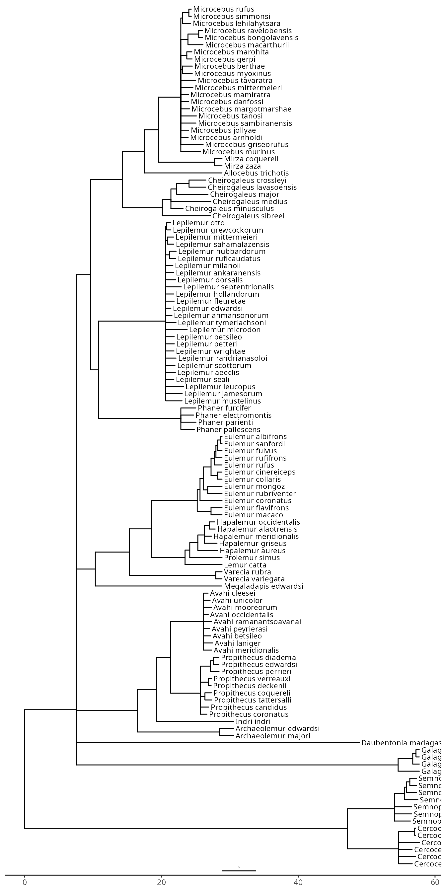
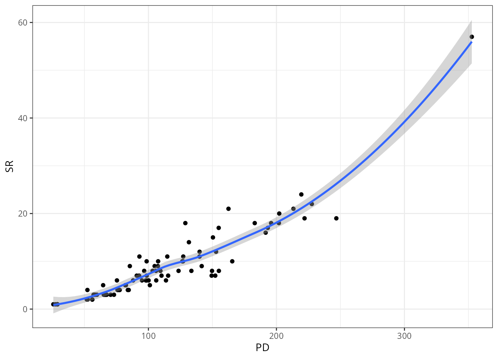
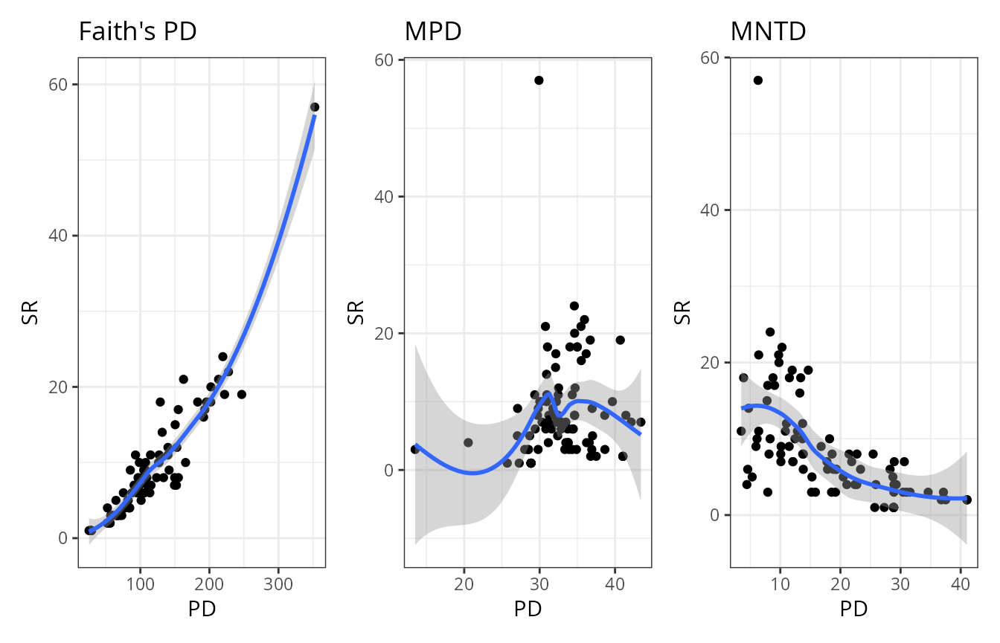
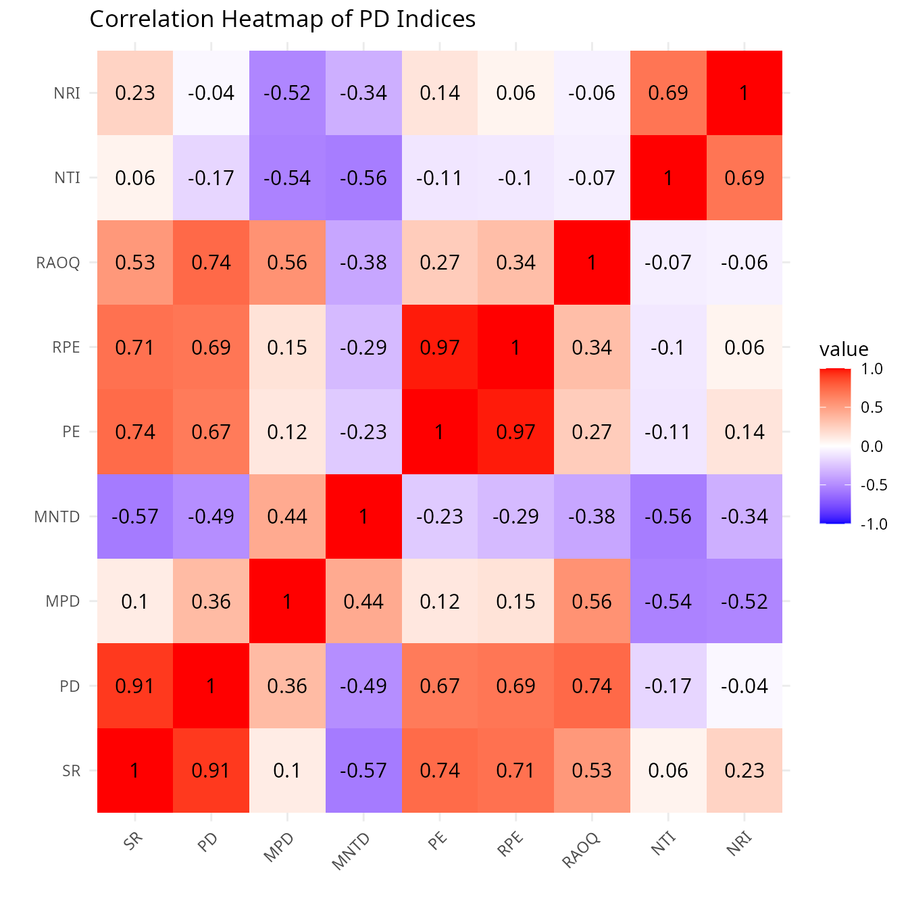

Omar Daniel
Leon-Alvarado¹²; J. Angel
Soto-Centeno²
¹ Department of Earth and Environmental Science, Rutgers University-Newark, NJ, USA.
² Department of Mammalogy, American Museum of Natural History, New
York City, NY, USA.
Phylogenetic Diversity (PD) indices are a set of metrics that quantify the evolutionary distinctiveness of a species or a group of species using the information contained within a phylogenetic tree. These indices serve as valuable complements to traditional measures of ecological diversity (such as species richness or abundance). They enable researchers to identify areas or lineages that harbor high evolutionary heritage. In a rapidly changing world where many species are on the brink of extinction, such evolutionary unique groups may play critical roles in overcoming major environmental crises and maintaining the planet’s ecological equilibrium.
The vilma package provides a suite of phylogenetic diversity indices, each with its own logic and interpretation. Because different indices answer different biological questions, users must choose the most appropriate ones for their study. Here, you will learn how to calculate these indices using real‑world data from the Primates of Madagascar.
0. The Indices
First, you need to know and understand the basics of each indices available in vilma. At this version (1.0) vilma offers six different PD indices, and the option to calculate species richness.
| Index | Definition | Function |
|---|---|---|
| Species richness | Number of species recorded in each grid cell. Although it is not a phylogenetic metric, it is calculated as a basic reference for comparison with phylogenetic diversity patterns. | points_to_raster |
| Faith’s Phylogenetic Diversity | Sum of the branch lengths connecting all species present in a grid cell. Higher values indicate that the cell contains a larger amount of evolutionary history. | faith.pd |
| Mean Pairwise Distance | Average phylogenetic distance between every possible pair of species in a grid cell. It reflects the overall evolutionary relatedness of the assemblage. | mpd.calc |
| Mean Nearest Taxon Distance | Average phylogenetic distance between each species and its closest relative within the grid cell. It is particularly sensitive to relationships near the tips of the phylogeny. | mntd.calc |
| Phylogenetic Endemism | Measures the amount of phylogenetic diversity restricted to a geographic area. Branch lengths are weighted by the geographic range of the descendant species, giving more importance to range-restricted evolutionary lineages. | pe.calc |
| Relative Phylogenetic Endemism | Compares observed phylogenetic endemism with the value obtained from a comparison tree in which all branches have equal length. It helps identify areas dominated by unusually long or unusually short range-restricted branches. | rpe.calc |
| Rao’s Quadratic Entropy | Measures phylogenetic diversity by combining the phylogenetic distances among species with their relative abundances. Higher values indicate assemblages composed of abundant and evolutionarily distinct species. | rao.calc |
| Net Relatedness Index | Standardized effect size of MPD relative to a null model. It evaluates whether species in a grid cell are more closely related or more distantly related than expected by chance across the entire phylogeny. | nri.calc |
| Nearest Taxon Index | Standardized effect size of MNTD relative to a null model. It evaluates phylogenetic clustering or overdispersion near the tips of the phylogeny. | nti.calc |
1. Data
Now that you know more about PD indices, it is time to proceed with the analyses. The spatial data consist of available occurrence records for all Primates species from Madagascar, obtained from GBIF. And for the phylogenetic tree, you will use the tree of Primates species from Madagascar available from VertLife.
First, load all needed libraries:
library(vilma)
library(ape)
library(phytools)
library(sf)
library(terra)
library(dplyr)
library(ggtree)
library(ggplot2)
library(patchwork)
library(reshape2)1.1. GBIF Data
In this exercise, you will perform standard spatial data analyses, which require selecting specific columns and filtering occurrences. First, read the downloaded data (a tab‑separated file – note that many people mistakenly expect commas and fail). Then, remove columns lacking coordinate information and rows not identified to the species level. Finally, extract the three columns required by vilma: Species, Longitude, and Latitude.
# Read the file
gbif_occ <- read.delim("../inst/extdata/Primates_Mad_GBIF.csv", na.strings = "")
# Check if you have any NA observation
any(is.na(gbif_occ$species))
any(is.na(gbif_occ$decimalLongitude))
any(is.na(gbif_occ$decimalLatitude))
gbif_occ <- gbif_occ[!is.na(gbif_occ$species), ]
# Exrtract the columns and check thm
prim_occ <- data.frame(Species = gbif_occ$species,
Lon = gbif_occ$decimalLongitude,
Lat = gbif_occ$decimalLatitude)
head(prim_occ, 5L)
#> Species Lon Lat
#> 1 Eulemur albifrons 50.17085 -15.77303
#> 2 Hapalemur aureus 47.32024 -21.39646
#> 3 Eulemur rubriventer 47.39409 -21.21686
#> 4 Eulemur fulvus 47.29641 -15.01195
#> 5 Propithecus candidus 49.76071 -14.56195Some occurrence records were not identified to the species level and therefore needed to be removed. After filtering, the dataset decreased from 17,489 to 17,278 records, which represents only a minor reduction. Although researchers often remove duplicate occurrences, this step is not mandatory in this case. The indices are calculated based on species presence or absence within each raster cell. Therefore, multiple records of the same species within a cell do not affect the results. However, the dataset should still be checked for other issues that are relatively easy to correct.
One of the most common problems is that occurrence records located near the coastline may appear in the sea because of GPS inaccuracies or spatial-resolution errors. The simplest solution would be to remove these records. However, because they may provide useful information, you will attempt to recover them by moving each point to the nearest location on the mainland.
Thus the first step here is to read the polygon map, in this case the boundaries of Madagascar. Then, you will transform the occurrences into a spatial object with the same projection as the polygon.
# Read the polygon
ma_pol <- read_sf("../inst/extdata/Madagascar.gpkg")
# Transform points into a spatal object
prim_occ <- prim_occ %>% st_as_sf(coords = c("Lon","Lat"), crs = 4326)
# Match the projection between the polygon and the points
prim_occ <- st_transform(prim_occ, st_crs(ma_pol))Now, using the spatial object and the mainland polygon, you will
intersect both layers to identify which occurrence records fall
inside and outside the mainland. Once
the records have been classified, plot the results using
tmap to visually inspect their locations.
# Extract the first column from the st_intersect result.
# This is a boolean vector (TRUE (inside), FALSE (outside))
occ_intersect <- st_intersects(prim_occ, st_union(ma_pol), sparse = F)[,1]
# Split the data
occ_inside <- prim_occ[occ_intersect,]
occ_outside <- prim_occ[!occ_intersect,]
library(tmap)
# Plot the results
tm_shape(ma_pol)+ # Plot the polygon
tm_polygons()+
tm_shape(occ_inside)+ # Add inside points
tm_dots()+
tm_shape(occ_outside)+ # Add outside points
tm_dots(fill="red")
Now, let’s fix those outside points. First, you will create a line
between each point and the country border using
st_nearest_points. This line represents the shortest
distance between the occurrence and the polygon boundary. Then, using
st_cast, you will convert each line into two points: the
starting point (the original occurrence) and the ending point (the
nearest location on the border). Finally, by using a grouping index, you
will extract the second point of each line—the endpoint—which
corresponds to the corrected coordinate located inside the country
boundaries.
# Create lines
nearest_lines <- st_nearest_points(occ_outside, st_union(ma_pol))
# Transform lines into points (start and end)
all_points <- st_cast(nearest_lines, "POINT")
# Create index ofr each point: 1,1,2,2,3,3...
point_groups <- rep(1:nrow(occ_outside), each = 2)
# Extract only the second point (end) and transform it into a spatial object
border_points <- all_points[seq(2, length(all_points), by = 2)] %>% st_as_sf()
library(tmap)
# Plot
tm_shape(ma_pol)+ # Add polygon
tm_polygons()+
tm_shape(occ_inside)+ # Add inside points
tm_dots()+
tm_shape(occ_outside)+ # Add outside points
tm_dots(fill="red")+
tm_shape(border_points)+ # Add fixed points
tm_dots(fill="blue")
# Return spatial points into a data.frame (inside)
occ_inside <- cbind(st_drop_geometry(occ_inside),st_coordinates(occ_inside))
# Return spatial points into a data.frame (fixed)
border_points <- cbind(st_drop_geometry(occ_outside), st_coordinates(border_points))
# Join inside and fixed points
occ_final <- rbind(occ_inside, border_points)Now you finish to fix and clean your points. However, this is a basic step, usually it is recommend a more deep and detailed cleaning, but with this your a ready to go for the next step.
1.2 Phylogeny
For phylogenetic diversity indices, you need a phylogeny that represents the evolutionary history of the species and allows you to quantify their evolutionary distinctiveness. Therefore, the phylogeny must meet some minimum requirements. The first and most important requirement is that the phylogeny must have branch lengths, whether they are calibrated in time or represent genetic/change distances. The type of branch length you use depends on your research question, but remember that each type represents a different biological meaning and may lead to different interpretations. Some indices, such as Faith’s PD, require a rooted phylogeny. Although other indices do not necessarily require the tree to be rooted, I strongly recommend always using a rooted phylogeny.
In this step, you will read the tree file. In this case, the file
contains a set of 100 trees for the primates of Madagascar, so you will
need to calculate a final consensus tree. To estimate
the branch lengths of the consensus tree, you will use the function
consensus.edges from the phytools package,
although nnls.tree from the phangorn package
can also be used. Additionally, you will modify the species names and
save them in the phylogeny as tip.label. Specifically, you
will replace underscores with single spaces so that the species names
follow the same format used in the occurrence dataset.
# Read tree
prim_trees <- read.nexus("../inst/extdata/Prim_Madgascar_Tree.nex")
# Majority rule, you can change p to a higher value for a stricter tree
cons_topology <- consensus(prim_trees, p = 0.5)
# Calcualte branch length consensus
prim_tree <- consensus.edges(prim_trees, consensus.tree = cons_topology)
# Change underscore to space in the species' name
prim_tree$tip.label <- gsub("_"," ", prim_tree$tip.label)
# Root the tree, in this case mid point
prim_tree <- midpoint.root(prim_tree)
p <- ggtree(prim_tree) +
geom_treescale(fontsize = 1) + # Add a scale bar
theme_tree2()+ # Add a subtle background and axis
geom_tiplab(size = 3)
# Display the plot
print(p)
2. vilma.dist object
Now that the occurrence data and phylogeny are ready to use, you will
start with the first step: creating a vilma.dist object
using the function points_to_raster. The vilma package is
raster-oriented, so most results are returned as raster layers. In this
step, you will generate the raster for your study area and define the
resolution, or pixel size.
For the pixel resolution, the function only accepts values in decimal degrees. For example, if you plan to use the results together with WorldClim or CHELSA variables at 30-arc-second resolution, you should use 0.008333 degrees. The same logic applies to the other common resolutions: 2.5 arc-minutes = 0.041667, 5 arc-minutes = 0.083333, and 10 arc-minutes = 0.166667. Once you create the vilma.dist object, you can check the results using the function plot or view.vilma for an interactive view.
library(vilma)
# Create the vilma.dist object, for more information try ?points_to_raster
prim_dist <- points_to_raster(points = occ_final, res = 0.8)
# See the results
view.vilma(prim_dist)
# or use plot(prim_dist)3. PD indices
Now, you can calculate all alpha phylogenetic diversity indices
available in vilma. Each alpha-PD function creates a
vilma.pd object, which contains the raster results,
including the PD values and species richness values, a table with the PD
and richness values for each raster cell, and additional information
such as the algorithm or method used. Likewise, when using the print
function, each index will display a complete summary of the results, and
the function view.vilma to display the maps in a interactive view.
3.1. Faith’s PD index
Faith’s Phylogenetic Diversity, usually called Faith’s PD, measures the total amount of evolutionary history represented by the species present in a site, community, or raster cell. This is most famous and common index used, and it requires a rooted phylogeny.
In simple terms, Faith’s PD is calculated by adding the branch lengths of the phylogenetic tree that connect all species found in a given cell (minimum spanning tree). If a cell contains species that are distantly related, the total branch length will usually be higher. If a cell contains species that are closely related, the total branch length will usually be lower. For example, imagine two raster cells each contain five species. One cell has five species from the same closely related genus, while the other has five species from different evolutionary lineages. Even though both cells have the same richness, the second cell will likely have a higher Faith’s PD because it represents more evolutionary history.
In vilma, Faith’s PD is calculated for each raster cell using the species present in that cell and the branch lengths of the phylogeny. The result is a raster layer where each pixel contains the Faith’s PD value for that location. A higher value means that the cell contains more accumulated evolutionary history.
Because Faith’s PD is based on the minimum spanning tree connecting
the species present in a site or raster cell, it generally requires at
least two species per cell to calculate the index.
Therefore, cells containing only a single species require special
treatment. For these cases, the function faith.pd provides
three options: 1) exclude, which removes single-species
cells from the analysis; 2) root, which assigns the branch
length from the species tip to the root of the tree; and 3)
node, which assigns the branch length from the species tip
to its most recent common ancestor with the rest of the tree. The choice
among these options depends on the research question
and the structure of the data. For example, when using large
phylogenies, the root option may overestimate the
contribution of a single species because it includes the full path from
the tip to the root.
When the index is calculated, check the message generated by the
faith.pd function. The function will compare the species
names in the vilma.dist object with the tip labels in the
phylogeny. It will then select only the species
shared by both datasets and return summary information about
the matching process. This step is important because phylogenetic
diversity indices can only be calculated for species that are present in
both the occurrence data and the phylogeny.
#>
#> vilma.pd Object Summary
#> -------------------------
#>
#> Distribution Matrix:
#> - Species: 104 unique taxa
#> - Cells: 90 spatial units
#> - Records: 17489 total observations
#>
#> Species Abundance Summary:
#> - Range: 1 - 2610 observations per species
#> - Total: 17489 observations
#> - Mean: 168.2 +/- 411.6 (SD) observations per species
#>
#> SR Summary:
#> - Range: 1.00 - 57.00
#> - Mean: 8.53 +/- 7.78 (SD)
#>
#> PD Summary:
#> - Range: 25.71 - 352.62
#> - Mean: 109.20 +/- 58.37 (SD)
#>
#> - Index: faith.pd
# Check the interactive map
view.vilma(prim_pd)One common issue with Faith’s PD is that this index is often strongly
correlated with species richness. In general, cells
with higher species richness tend to have higher PD values because more
species usually add more branches to the minimum spanning tree. You can
use the table stored in the resulting vilma.pd object to
evaluate how strongly PD and species richness are correlated in your
dataset.
# Check pearson correlation
cor.test(prim_pd$pd.table$SR, prim_pd$pd.table$PD, method = "pearson")
#>
#> Pearson's product-moment correlation
#>
#> data: prim_pd$pd.table$SR and prim_pd$pd.table$PD
#> t = 21.014, df = 88, p-value < 2.2e-16
#> alternative hypothesis: true correlation is not equal to 0
#> 95 percent confidence interval:
#> 0.8707102 0.9420848
#> sample estimates:
#> cor
#> 0.9131461
# Check spearman correlation
cor.test(prim_pd$pd.table$SR, prim_pd$pd.table$PD, method = "spearman")
#>
#> Spearman's rank correlation rho
#>
#> data: prim_pd$pd.table$SR and prim_pd$pd.table$PD
#> S = 7685.3, p-value < 2.2e-16
#> alternative hypothesis: true rho is not equal to 0
#> sample estimates:
#> rho
#> 0.9367387
# Plot the data
ggplot(data = prim_pd$pd.table)+
geom_point(aes(x = PD, y = SR))+
geom_smooth(aes(x = PD, y = SR))+
theme_bw()
As you can see, Faith’s PD is highly correlated with species richness. This means that the index may be capturing mainly the number of species in each cell rather than differences in evolutionary distinctiveness among assemblages. A good alternative is to use indices based on phylogenetic distance matrices, such as Mean Pairwise Distance (MPD) and Mean Nearest Taxon Distance (MNTD). These indices are less directly dependent on species richness because they summarize the average phylogenetic distance among species, rather than the total amount of branch length accumulated in each cell.
3.2. Mean Pairwise Distance (MPD) index.
Mean Pairwise Distance (MPD) is an alpha phylogenetic diversity index that measures the average phylogenetic distance among all pairs of species occurring in a site, community, or raster cell. Instead of summing the total branch length, as in Faith’s PD, MPD uses a phylogenetic distance matrix and calculates the mean distance between every possible pair of species present in the assemblage.
The logic of MPD is to evaluate how evolutionarily related or distinct the species in a cell are from each other. High MPD values indicate that the species present in a cell are, on average, distantly related. This means that the assemblage contains species from different evolutionary lineages. Low MPD values indicate that the species are, on average, closely related, suggesting that the assemblage is composed of species from more similar or closely related lineages.
In vilma, the function mpd.calc calculates
the Mean Pairwise Distance (MPD) index. Similar to Faith’s PD, this
index requires at least two species per cell, so the function implements
the same three options for single-species cells: exclude,
root, and node. In addition, MPD can
incorporate abundance information when available. However, in this
example, abundance will not be used, so the abundance argument will be
set to FALSE.
#>
#> vilma.pd Object Summary
#> -------------------------
#>
#> Distribution Matrix:
#> - Species: 104 unique taxa
#> - Cells: 90 spatial units
#> - Records: 17489 total observations
#>
#> Species Abundance Summary:
#> - Range: 1 - 2610 observations per species
#> - Total: 17489 observations
#> - Mean: 168.2 +/- 411.6 (SD) observations per species
#>
#> SR Summary:
#> - Range: 1.00 - 57.00
#> - Mean: 8.53 +/- 7.78 (SD)
#>
#> PD Summary:
#> - Range: 13.49 - 43.43
#> - Mean: 32.89 +/- 4.53 (SD)
#>
#> - Index: mpd.calc
# Check the interactive map
view.vilma(prim_mpd)3.3. Mean Nearest Taxon Distance (MNTD)
Mean Nearest Taxon Distance (MNTD) is an alpha phylogenetic diversity index that measures the average phylogenetic distance between each species in a site, community, or raster cell and its closest relative within that same assemblage. Unlike MPD, which considers all possible pairs of species, MNTD focuses only on the nearest phylogenetic neighbor of each species.
The logic of MNTD is to evaluate how closely related the species in a cell are near the tips of the phylogeny. High MNTD values indicate that each species is, on average, relatively distant from its closest relative in the assemblage. This suggests that the cell contains species that are not closely related at the terminal branches of the tree. Low MNTD values indicate that species tend to have close relatives within the same cell, suggesting stronger phylogenetic similarity or clustering near the tips of the phylogeny.
MNTD is especially useful for detecting fine-scale phylogenetic structure. While MPD summarizes the overall evolutionary distance among all species in a cell, MNTD is more sensitive to recent evolutionary relationships because it focuses on the closest relatives. For this reason, MNTD can help identify whether assemblages are composed of closely related species from the same recent lineages or species that are more evolutionary isolated from their nearest relatives.
In vilma, the function mntd.calc calculates the Mean
Nearest Taxon Distance (MNTD) index. This function uses the same main
parameters as mpd.calc, including the options for handling
single-species cells: exclude, root, and
node. As with MPD, MNTD can also incorporate abundance
information when available. However, in this example, abundance will not
be used, so the abundance argument will be set to FALSE.
#>
#> vilma.pd Object Summary
#> -------------------------
#>
#> Distribution Matrix:
#> - Species: 104 unique taxa
#> - Cells: 90 spatial units
#> - Records: 17489 total observations
#>
#> Species Abundance Summary:
#> - Range: 1 - 2610 observations per species
#> - Total: 17489 observations
#> - Mean: 168.2 +/- 411.6 (SD) observations per species
#>
#> SR Summary:
#> - Range: 1.00 - 57.00
#> - Mean: 8.53 +/- 7.78 (SD)
#>
#> PD Summary:
#> - Range: 3.50 - 41.04
#> - Mean: 18.34 +/- 10.00 (SD)
#>
#> - Index: mntd.calc
# Check the interactive map
view.vilma(prim_mntd)Now, you can visually compare how these indices differ from each other and how each one is correlated with species richness (SR). Of course, every index has its own logic, objective, and biological interpretation. However, it is always useful to evaluate the influence of species richness on each index, especially because some phylogenetic diversity metrics may be strongly driven by the number of species present in each cell.
# Plot the PD data
pd <- ggplot(data = prim_pd$pd.table)+
geom_point(aes(x = PD, y = SR))+
geom_smooth(aes(x = PD, y = SR))+
theme_bw()+
ggtitle("Faith's PD")
# Plot the MPD data
mpd <- ggplot(data = prim_mpd$pd.table)+
geom_point(aes(x = PD, y = SR))+
geom_smooth(aes(x = PD, y = SR))+
theme_bw()+
ggtitle("MPD")
# Plot the MNTD data
mntd <- ggplot(data = prim_mntd$pd.table)+
geom_point(aes(x = PD, y = SR))+
geom_smooth(aes(x = PD, y = SR))+
theme_bw()+
ggtitle("MNTD")
# Multiple using patchwork library
pd+mpd+mntd
3.4. Phylogenetic Endemism (PE) index
Phylogenetic Endemism (PE), is an alpha phylogenetic diversity index that measures how much evolutionary history is geographically restricted to a particular site, community, or raster cell. Unlike Faith’s PD, which sums the total branch length represented by the species in a cell, PE weights each branch by its geographic range. Therefore, branches that occur in fewer cells contribute more strongly to the index than branches that are widely distributed.
The logic of PE is to identify areas that contain unique or range-restricted evolutionary history. A cell will have high PE when it contains species, or deeper evolutionary lineages, that occur in only a small part of the study area. In contrast, a cell may have high species richness or high Faith’s PD but low PE if most of its species belong to widespread lineages. Therefore, PE is especially useful for detecting areas of conservation importance because it highlights places that represent geographically rare evolutionary diversity.
In practice, PE combines phylogenetic information and spatial distribution information. Each branch of the phylogeny is evaluated according to the distribution of the species descending from that branch. Branches with restricted geographic ranges receive higher weight, while branches shared by many widespread species receive lower weight. As a result, PE gives more importance to cells containing endemic or narrowly distributed lineages.
In vilma, the function pe.calc calculates the
Phylogenetic Endemism (PE) index. The function also includes the
argument RPE, a logical option that determines whether
Relative Phylogenetic Endemism should also be
calculated. If RPE = TRUE, which is the default, the function computes
Relative PE as RPE = PE / PD.
Because PE depends on PD, the function also includes the methods
exclude, root, and node to handle
cells with a single species. These options determine how single-species
cells are treated during the calculation. Relative PE expresses the
proportion of phylogenetic diversity in each cell that
is geographically restricted. The resulting raster identifies cells that
concentrate range-restricted evolutionary history. High PE values
indicate areas where evolutionary diversity is both
phylogenetically meaningful and geographically
restricted.
#>
#> vilma.pd Object Summary
#> -------------------------
#>
#> Distribution Matrix:
#> - Species: 104 unique taxa
#> - Cells: 90 spatial units
#> - Records: 17489 total observations
#>
#> Species Abundance Summary:
#> - Range: 1 - 2610 observations per species
#> - Total: 17489 observations
#> - Mean: 168.2 +/- 411.6 (SD) observations per species
#>
#> SR Summary:
#> - Range: 1.00 - 57.00
#> - Mean: 8.53 +/- 7.78 (SD)
#>
#> PD Summary:
#> - Range: 0.04 - 80.10
#> - Mean: 3.86 +/- 10.87 (SD)
#>
#> RPE Summary:
#> - Range: 0.00 - 0.27
#> - Mean: 0.02 +/- 0.04 (SD)
#>
#> - Index: pe.calc
# Check the interactive map
view.vilma(prim_pe)3.5. Rao’s Quadratic Entropy (RaoQ)
Rao’s Quadratic Entropy, also known as RaoQ, is an alpha phylogenetic diversity index that measures the expected phylogenetic dissimilarity between two individuals randomly selected from the same site, community, or raster cell. In the context of phylogenetic diversity, RaoQ uses the phylogenetic distance among species to evaluate how evolutionarily different the species within a cell are from one another.
The logic of RaoQ is based on both phylogenetic distance and, when available, species abundance. If two randomly selected individuals from a cell are likely to belong to distantly related species, the cell will have a high RaoQ value. In contrast, if the individuals are likely to belong to the same species or to closely related species, the cell will have a low RaoQ value. Therefore, RaoQ describes within-community phylogenetic dispersion, giving higher values to assemblages composed of evolutionarily distinct lineages.
In vilma, RaoQ is calculated with the function rao.calc,
using a rooted phylogenetic tree. The function also includes the
argument scale01. If scale01 = TRUE, which is
the default, the phylogenetic distance matrix is
divided by its maximum value so that distances range from 0 to 1. Under
this scaling, RaoQ values also range approximately from 0 to 1, which
makes results easier to interpret and compare. Larger RaoQ values
indicate greater within-cell phylogenetic dispersion, while lower values
indicate that the assemblage is composed of more closely related species
or dominated by few closely related lineages. The function includes the
argument abundance. If abundance = FALSE,
which is the default, the calculation uses
presence–absence data, meaning that all species present in a cell are
weighted equally. If abundance = TRUE, the function uses
the number of records per species within each cell to estimate relative
abundances.
#>
#> vilma.pd Object Summary
#> -------------------------
#>
#> Distribution Matrix:
#> - Species: 104 unique taxa
#> - Cells: 90 spatial units
#> - Records: 17489 total observations
#>
#> Species Abundance Summary:
#> - Range: 1 - 2610 observations per species
#> - Total: 17489 observations
#> - Mean: 168.2 +/- 411.6 (SD) observations per species
#>
#> SR Summary:
#> - Range: 1.00 - 57.00
#> - Mean: 8.53 +/- 7.78 (SD)
#>
#> PD Summary:
#> - Range: 0.00 - 0.34
#> - Mean: 0.22 +/- 0.08 (SD)
#>
#> - Index: rao.calc
# Check the interactive map
view.vilma(prim_rao)3.6. Net Relatedness Index (NRI) and Nearest Taxon Index (NTI)
Net Relatedness Index (NRI) and Nearest Taxon Index (NTI) are standardized alpha phylogenetic diversity indices used to evaluate whether the species within each site, community, or raster cell are more closely related or more distantly related than expected under a null model. Unlike raw indices such as MPD and MNTD, these indices compare the observed phylogenetic structure of each cell against randomized expectations.
NRI is based on the standardized effect size of Mean Pairwise Distance (MPD). Therefore, it evaluates the overall phylogenetic structure of the assemblage by considering the average phylogenetic distance among all pairs of species in a cell. Positive NRI values indicate phylogenetic clustering, meaning that species in the cell are more closely related than expected by chance. Negative NRI values indicate phylogenetic overdispersion, meaning that species are more distantly related than expected under the null model. Because NRI is based on MPD, it captures deeper or broader phylogenetic structure across the tree.
NTI is based on the standardized effect size of Mean Nearest Taxon Distance (MNTD). Therefore, it focuses on the phylogenetic distance between each species and its closest relative within the cell. Positive NTI values indicate clustering near the tips of the phylogeny, meaning that species tend to co-occur with close relatives more often than expected by chance. Negative NTI values indicate overdispersion near the tips, meaning that species tend to be more distantly related from their nearest relatives than expected under the null model. Because NTI is based on MNTD, it is more sensitive to recent evolutionary relationships and terminal branches.
In vilma, the functions nri.calc and
nti.calc calculate NRI and NTI, respectively. The function
nri.calc uses MPD as the observed metric,
while nti.calc uses MNTD. Both functions
require a rooted phylogenetic tree with branch lengths and a
vilma.dist object containing the species distributions.
They also implement the same options for handling single-species cells:
root, node, and exclude.
Additionally, both functions can incorporate abundance information,
although abundance is set to FALSE by default.
Both NRI and NTI require null-model
simulations. In vilma, the number of randomizations is controlled by the
iterations argument, with a default of 999. The null model
is defined using the sampling argument, which can be set to
taxa.label, range, neighbor, or
regional. These options allow the user to test phylogenetic
structure under different randomization assumptions. For example,
taxa.label randomizes species labels on the phylogeny,
while regional builds communities by drawing species from a regional
species pool.
The logic of these indices is that raw MPD or MNTD values alone do not indicate whether an assemblage is unusually clustered or overdispersed. A cell may have low MPD or MNTD simply because the available species pool is composed of closely related species. By comparing the observed value against a null distribution, NRI and NTI identify whether the observed phylogenetic structure is stronger or weaker than expected by chance. Thus, NRI and NTI are especially useful for detecting non-random phylogenetic patterns in community composition.
# Calculate the NTI index using root method
prim_nti <- nti.calc(tree = prim_tree, dist = prim_dist, mntd.method = "root", abundance = FALSE, iterations = 999, sampling = "taxa.label")
# Check the NTI summary results
print(prim_nti)#>
#> vilma.pd Object Summary
#> -------------------------
#>
#> Distribution Matrix:
#> - Species: 104 unique taxa
#> - Cells: 90 spatial units
#> - Records: 17489 total observations
#>
#> Species Abundance Summary:
#> - Range: 1 - 2610 observations per species
#> - Total: 17489 observations
#> - Mean: 168.2 +/- 411.6 (SD) observations per species
#>
#> SR Summary:
#> - Range: 1.00 - 57.00
#> - Mean: 8.53 +/- 7.78 (SD)
#>
#> PD Summary:
#> - Range: -3.08 - 2.45
#> - Mean: -0.10 +/- 0.97 (SD)
#>
#> - Index: nti.calc
# Check the NTI interactive map
view.vilma(prim_nti)
# Calculate the NRI index using root method
prim_nri <- nri.calc(tree = prim_tree, dist = prim_dist, mpd.method = "root", abundance = FALSE, iterations = 999, sampling = "taxa.label")
# Check the NRI summary results
print(prim_nri)#>
#> vilma.pd Object Summary
#> -------------------------
#>
#> Distribution Matrix:
#> - Species: 104 unique taxa
#> - Cells: 90 spatial units
#> - Records: 17489 total observations
#>
#> Species Abundance Summary:
#> - Range: 1 - 2610 observations per species
#> - Total: 17489 observations
#> - Mean: 168.2 +/- 411.6 (SD) observations per species
#>
#> SR Summary:
#> - Range: 1.00 - 57.00
#> - Mean: 8.53 +/- 7.78 (SD)
#>
#> PD Summary:
#> - Range: -1.88 - 2.70
#> - Mean: -0.17 +/- 0.68 (SD)
#>
#> - Index: nri.calc
# Check the NRI interactive map
view.vilma(prim_nri)Now, you have calculated all the alpha phylogenetic diversity indices
currently available in vilma. The number of available
indices may increase over time, but you have already seen that the
functions follow a similar and straightforward structure. The most
important point is not only to know how to run each function, but also
to understand the logic behind each index, when each index should be
used, and what type of ecological or evolutionary question each one can
help answer.
To better understand the behavior of the indices, you will perform a simple but useful analysis to evaluate how similar the results are among them. In this case, you will create a heatmap showing the pairwise correlations among all alpha phylogenetic diversity indices calculated for the primates of Madagascar. This analysis will help identify which indices produce similar spatial patterns and which ones capture different aspects of phylogenetic diversity.
# Create the table with the indices values
index_values <- data.frame(SR = prim_pd$pd.table$SR,
PD = prim_pd$pd.table$PD,
MPD = prim_mpd$pd.table$PD,
MNTD = prim_mntd$pd.table$PD,
PE = prim_pe$pd.table$PD,
RPE = prim_pe$pd.table$RPE,
RAOQ = prim_rao$pd.table$PD,
NTI = prim_nti$pd.table$PD,
NRI = prim_nri$pd.table$PD)
# Create a pairwise correlation matrix
cor_matrix <- cor(index_values, use = "pairwise.complete.obs")
# Melt the matrix for an easy plotting
cor_melt <- melt(cor_matrix)
# Create the plot
ggplot(cor_melt, aes(x = Var2, y = Var1, fill = value)) +
geom_tile() +
geom_text(aes(label = round(value, 2)), size = 4) + # Add correlation numbers
scale_fill_gradient2(low = "blue", mid = "white", high = "red",
midpoint = 0, limit = c(-1, 1)) +
labs(x = "", y = "", title = "Correlation Heatmap of PD Indices") +
theme_minimal() +
theme(axis.text.x = element_text(angle = 45, hjust = 1))
The correlation matrix reveals three main patterns. First, SR, PD, PE, and RPE form a strongly positive block (r ≥ 0.66–0.97), indicating rich sites harbor deep evolutionary history and endemism. Yet PE and RPE are nearly identical (0.97), making RPE empirically redundant. Second, SR strongly correlates with PD (0.91) but negatively with MNTD (-0.57) while showing no link to MPD (0.10), suggesting habitat filtering adds closely related species without altering overall phylogenetic breadth. Third, standardized effect sizes (NTI/NRI) are decoupled from SR (r ≈ 0.06–0.23) but negatively tied to MPD/MNTD, proving phylogenetic structure depends on species identity rather than richness. In short, your correlation matrix has already told you that richness, structure, and evenness are independent stories in your system.
With this kind of analysis, you can proceed with a more specific analysis, and it will help you decide which indices to use.
4. Saving results.
Once you have selected the index or indices that you want to keep and
use for further analyses, vilma allows you to save the
alpha phylogenetic diversity results using the function
write.vilma.pd. This function requires a
vilma.pd object, a file name, which can also
include the output directory path, and the raster.format
argument. The available raster format options are tif,
grd, and `.
The function generates different output files. First, it creates a
CSV file containing the values associated with each
raster cell, including species richness, phylogenetic diversity values,
and any other index-specific results. Second, it saves the
raster layers available in the vilma.pd
object using the raster format specified by the user. Third, it
generates a log file containing the summary information
of the vilma.pd object, equivalent to the information
displayed when using the print function. Let see this example saving the
results of MPD.
# Saving the results as
write.vilma.pd(vilma.pd = prim_mpd, file = "results/Prim_Madagascar_MPD", raster.format = "tif", overwrite = TRUE)The output folder will looks like:
results/
├── Prim_Madagascar_MPD.csv
├── Prim_Madagascar_MPD_pd_raster.tif
└── Prim_Madagascar_MPD_log.txt5. Conclusion
In this tutorial, you learned how to calculate alpha phylogenetic
diversity indices in vilma using occurrence data, a
phylogenetic tree, and a vilma.dist object. You explored
several indices, including Faith’s PD, MPD, MNTD, PE, RPE, RaoQ, NRI,
and NTI, each representing a different dimension of evolutionary
diversity within raster cells.
You also learned how to compare indices and evaluate their relationship with species richness. This step is important because some indices may be strongly influenced by the number of species in each cell, while others capture phylogenetic structure, endemism, or evolutionary distinctiveness more independently.
Finally, you learned how to save the results using
write.vilma.pd, including raster layers, cell-level tables,
and summary log files. Overall, vilma provides a flexible raster-based
framework to calculate, visualize, compare, and export alpha
phylogenetic diversity patterns across geographic space.